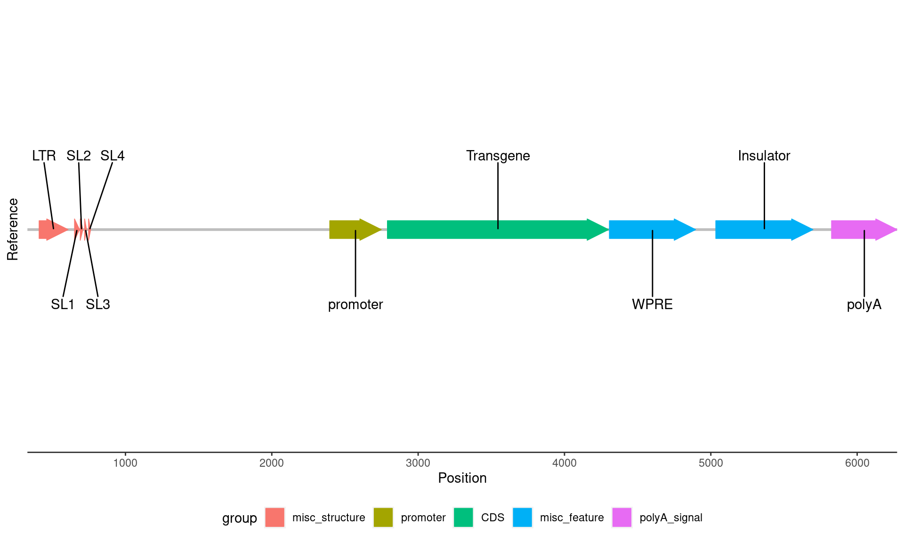

minimap2 -x splice -L --MD reference.fasta all_reads.fastq > vector_alignment.pafBioinformatics tutorial
This section will walk you through the process of analysing long-read sequencing data from lentiviral vectors.
Before you begin the analysis, make sure to do some QC with your QC tool of choice (I like NanoQC). If necessary, you can also include ‘failed’ (lower quality) reads in the analysis, as accuracy is not so important when we are simply looking at the length of the lentiviral RNA.
Aligning to the vector
We will align reads to the vector reference sequence using minimap2. First, we will align into the PAF format (this is a simple tab-separated format that makes it easy for us to find the 3’ ends of reads):
Where:
-x spliceuses the splice preset for alignment (will help to identify splicing events in reads)-L --MDmodify the output format (not really important for this case)
Additionally, we will align into the SAM format, which is useful for finding the sequencing coverage (we could also use this file to find the 3’ read ends, but it’s just easier to use the PAF).
minimap2 -ax splice -L --MD reference.fasta all_reads.fastq > vector_alignment.sam
# convert to BAM, sort and index
samtools view -b vector_alignment.sam > vector_alignment.bam
samtools sort vector_alignment.bam > vector_alignment_sorted.bam
rm vector_alignment.bam vector alignment.sam # don't need these anymore
samtools index vector_alignment_sorted.bam
Note
Note: in order to determine the percentage of reads aligned to the vector vs those aligned to the human genome, it’s best to align to a hybrid reference (which can be generated by using cat to combine the vector FASTA to an appropriate genome, like CHM13), remembering to disable secondary alignments with --secondary=no.
Sequencing coverage
To find the sequencing coverage, we will use samtools depth as follows:
samtools depth -a -d 0 vector_alignment_sorted.bam > vector_coverage.tsvWhere:
-aoutputs all positions, even those with zero coverage-d 0removes the upper limit on coverage (otherwise, the coverage plot will be capped at a certain y value, leading to a flat, ‘shaven’ appearance)
Splicing
Splicing can be plotted from the BAM file using ggsashimi, as follows:
python ./ggsashimi/ggsashimi.py -b vector_alignment_sorted.bam -c vector:329-6582 -M 3Where:
-cshould be in the format ref_name:start-end, giving the name of the reference sequence and start/end positions for the plot-M 3only plots splicing events with at least 3 supporting reads
Plotting in R
We will combine these outputs to create plots in R that give an overal picture of the lentiviral RNA sequencing quality. First, we need to load the required packages:
library(GenomicRanges)
library(readr)
library(rtracklayer) # read gff
library(ggplot2) # make other plots
library(gggenes) # make ref plot
library(cowplot) # combine plots
library(ggrepel)
library(grid)
library(dplyr)Each of the panels in our plot will be created seperately, and then we will use the cowplot package to combine them into one figure. First, the reference panel using the gggenes package:
# first clean up the reference a little and format it for gggenes
reference <- import.gff("reference_annotation.gff")
# this reference is already pretty clean, but here's some code that can be useful for cleaning up:
# restrict() which allows you to remove annotations outside of the transcribed region
# disjointBins() which creates a vector that groups annotations together such that no group
# contains overlapping annotations. This is a good way to force things onto separate tracks so
# that the text isn't overlapping and hard to read
reference <- as.data.frame(reference)
reference <- data.frame(
seqnames = rep("LV6", nrow(reference)),
start = reference$start,
end = reference$end,
strand = reference$strand,
id = reference$label,
group = reference$type, # colour annotations based on their type
plotting_track = rep("1", nrow(reference))) # we want all annotations on a single track
reference$forward <- ifelse(reference$strand == "+", TRUE, FALSE)
# make the plot
reference_plot <- ggplot(
reference,
aes(xmin = start, xmax = end, y = plotting_track, fill = group,
label = id, col = group, forward = forward)) +
geom_gene_arrow( # modify the sizes to get the arrow shape you like
arrowhead_height = grid::unit(6, "mm"), arrow_body_height = grid::unit(5, "mm"),
arrowhead_width = grid::unit(6, "mm")) +
# important: set the x axis (position) limits based on the transcribed region for
# each plot panel. this ensures the panels will line up properly
scale_x_continuous(limits = c(330, 6273), n.breaks = 10, expand = expansion(0, 0)) +
# if you want multiple tracks, use facet_wrap(~ track_column)
theme_genes() +
theme(legend.position = "bottom", axis.text.y=element_blank()) +
xlab("Position") +
ylab("Reference") +
# we will use ggrepel to label the annotations in a way that will minimise text overlap
# alternatively you can use gggenes geom_gene_label() function to put the labels within
# the shapes, but this doesn't work well for small annotations
geom_text_repel( # put every second label above
data = reference %>%
mutate(start = (start + end)/2) %>%
dplyr::slice(which(row_number() %% 2 != 0)),
aes(x = start, y = plotting_track, label = id),
inherit.aes = F, force = 3, nudge_y = 0.2, nudge_x = -0.1) +
geom_text_repel( # and every other label below
data = reference %>%
mutate(start = (start + end)/2) %>%
dplyr::slice(which(row_number() %% 2 == 0)),
aes(x = start, y = plotting_track, label = id),
inherit.aes = F, force = 3, nudge_y = -0.2, nudge_x = 0.1)
reference_plot
Now that we have the reference plot, we can add in the coverage and 3’ end information:
# read in the coverage data
coverage_data <- read_tsv("coverage.tsv", col_names = c("chr", "pos","coverage"))
coverage_data <- coverage_data[330:6273,] # as mentioned above, specify the start & end points
# coverage-only plot
coverage_plot <- ggplot(coverage_data, aes(pos, coverage)) +
geom_area(fill = "#1b9e77", alpha = 0.5) +
scale_x_continuous(limits = c(330, 6273), n.breaks = 10,
expand = expansion(0, 0), name = NULL) +
theme_minimal()
coverage_plot# read in the 3' end data
three_prime_data <- read_tsv(
"three_prime_ends.paf",
col_names = c("query_name", "query_len", "query_start", "query_end", "rel_strand",
"target_name", "target_len", "target_start", "target_end", "num_matches",
"align_block_len", "qual"))
# you can use this dataframe to calculate the % of reads that terminate in certain locations
# plot with sequencing coverage and 3' read ends
three_prime_plot <- ggplot(three_prime_data, aes(target_end)) +
# add coverage data
geom_area(data = coverage_data, aes(pos, coverage), fill = "#1b9e77", alpha = 0.5) +
# add the 3' end peaks after coverage so they're in the front
geom_area(
aes(y = ..count..), stat = "bin", binwidth = 30, # choose appropriate bin size
col = "#d95f02", fill = "#d95f02", alpha = 0.6) +
scale_x_continuous(limits = c(330, 6273),
n.breaks = 10, expand = expansion(0, 0), name = NULL) +
theme_minimal()
# combine these plots with the reference
# first align the plots
aligned_plots <- align_plots(
three_prime_plot, coverage_plot, reference_plot,
align = 'v', axis = 'l')
# then you can actually plot them
plot_grid(
aligned_plots[[1]],
aligned_plots[[2]], # these are the three plots we aligned
aligned_plots[[3]],
ncol = 1, # we want them all stacked on top of one another
rel_heights = c(1, 1, 2) # set size for each plot: if you have a lot of annotations put the reference as 2 vs the 1 for the coverage/3' end plots e.g. c(1, 1, 2)
)